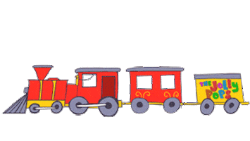

About
Hello! I'm a CS major at FINKI UKIM. My interests are in physics, art and mathematics. My projects include various implementations of machine learning. On this website you will find my updates on my projects, mathematical ideas, and random work.
Updates from Outer Space
- Astronauts may need to jump in space to fight bone loss
- Satellites watch record-breaking wildfires burn across Alaska
- Tricky Mars rocks making things difficult for NASA's Perseverance rover
- Surprise 'fossil galaxy' spotted near mighty Andromeda
- James Webb Space Telescope's supercold camera is now ready for science
- NASA will unveil the James Webb Space Telescope's 1st science photos this month. Here's how to watch.
- SpaceX's Starlink satellites will help improve space weather forecasts amid sun's unpredictable activity
- Another supermoon rises this month with July's 'Buck Moon'
- A huge comet will make its closest approach to Earth in July.
- US Space Force establishes new unit to track 'threats in orbit'
- The 'faintest asteroid ever detected' won't hit Earth, months of observations show
Image of the Day

First year Subjects
| First Semester | Second Semester | |
|---|---|---|
| Compulsory | Calculus 1 | Calculus 2 |
| Discrete structures 1 | Discrete structures 2 | |
| Structural programming | Object oriented programming | |
| Introduction to Computer Science | Computer Architecture and Organization | |
| Professional skills | ||
| Elective | Fundamentals of web design |
Fun Train Fact
Modern bullet trains can now travel more than 300 mph. During the 1964 Tokyo Olympics, bullet trains were able to perform at a constant speed of 130 mph. Over the decades, the limit of these trains slowly increased, with the current world record of a train’s top speed being 357.2 mph. Several other countries such as Germany, China, and France have also been slowly developing their train systems. Their trains are now also equally capable of performing at extreme speeds.
